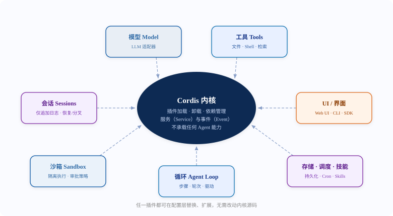
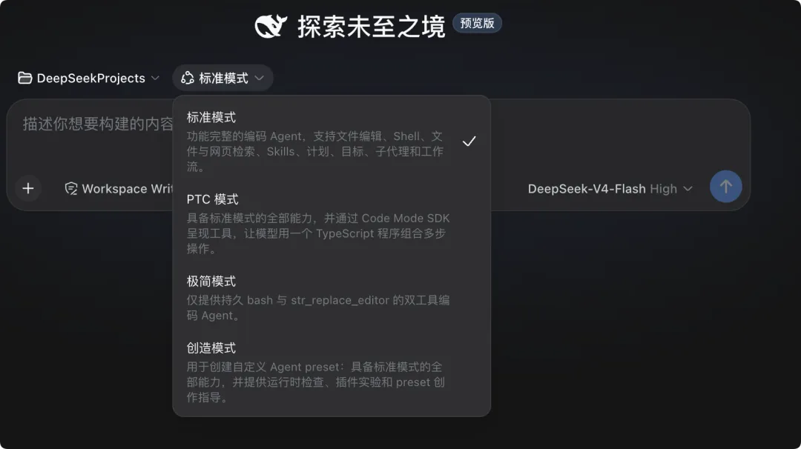

DeepSeek Harness 紹介
AI モデルはすでに複雑なコーディングタスクを単独で完了できる。真の課題はもはやモデルをより賢くすることではなく、その能力を、安定性・信頼性・可観測性をもって、実際に使用可能な Agent として組織化する方法である。。
2026年8月、深度求索（DeepSeek）はオープンソースとして公開したDeepSeek Harness（dsh）——ひとつのすべてがプラグインという Agent フレームワークであり、この問題への答えを示した：Agent = Model + Harness。モデルは Agent の魂であり、Harness は Agent に環境を理解し、ツールを使い、現実のシナリオで継続的に働く能力を与える。

DeepSeek Harness とは？
DeepSeek Harness（dsh）深度求索（DeepSeek AI）が開発したオープンソースの Agent Harness（エージェントフレームワーク）、MIT ライセンスを採用し、TypeScript で書かれ、2026年8月に正式にオープンソース化された。現在は開発者プレビュー段階にある（公式は将来、互換性を壊す変更があると予告している）。
DeepSeek Harness はモデル自体を最適化するのではなく、モデルが動作する環境を最適化する。すべてがプラグイン（Everything is a Plugin）。
モデル、ツール、スキル、セッション、サンドボックス、ストレージ、ループ（agent loop）、スケジューリング、UI などすべての Agent 能力はプラグインによって提供される、Cordis カーネルのサービス（Service）とイベント（Event）を通じて相互に連携する——開発者はソースコードを一切変更することなく、設定レベルで任意の能力を選択・置換・拡張できる。
基盤はオープンソースのプラグインシステムCordisによって駆動され、その設計思想は論文『A Programming Paradigm for Spatiotemporal Composability』に対応している。実行時にはパッチを当てる必要のある特権カーネルは存在しない。すべての能力登録は可逆な副作用であり、プラグインをアンインストールすると自動的に取り消される。したがって dsh を拡張する方法は、新しいプラグインを他のプラグインの隣にマウントすることである。
「Everything is a Plugin.」（すべてがプラグイン）—— DeepSeek Harness 公式スローガン
モデルは Agent の魂であり、Harness は Agent に環境を理解し、ツールを使い、現実のシナリオで継続的に働く能力を与える。—— DeepSeek Harness 公式サイト
なぜ Harness が必要なのか？
業界の結論はますます一致してきている：ボトルネックはモデルの知能ではなく、インフラにある。OpenAI チームは100万行のコードを使った実験で、5か月間の成果物がすべて Agent によって完了し、エンジニアはコードを1行も書かなかった。
LangChain は外部のハーネス環境（ドキュメント構造、検証ループ、追跡システム）を最適化するだけで、コーディング Agent の Terminal Bench 2.0 のスコアを52.8%から66.5%へと急上昇させ、世界ランキングを30位から5位へと躍進させた——基盤モデルのパラメータは1つも変更されていない。
DeepSeek Harness はまさにこのコンセンサスを製品化したものである。より強いモデルを追求するのではなく、モデルの実行に必要な制約、フィードバック、ツール、記憶、可観測性すべてを組み合わせ可能なプラグインインフラストラクチャとし、各チームがそれぞれの方法で AI を操れるようにする。
AI エンジニアリングパラダイムの3つの転換
Harness がなぜ重要なのかを理解するには、私たちがどのように一歩一歩ここまで来たのかをまず正確に把握する必要がある：
| パラダイム | 核心的な問題 | 最適化対象 | 対話モード |
|---|---|---|---|
| プロンプトエンジニアリング | どう言葉を明確に伝えるか | Prompt の言い回し、形式、例 | 一問一答 |
| コンテキストエンジニアリング | どう AI に情報を与えるか | ドキュメント、コード断片、過去の対話 | 情報注入 → 生成 |
| ハーネスエンジニアリング | どう Agent を確実に動作させるか | 制約、フィードバックループ、制御システム | 人間が舵を取り、Agent が実行する |
DeepSeek Harness はハーネスエンジニアリングの理念の完全な製品化：制約、フィードバック、可観測性、置換可能性をすべて具体化したオープンソース実装であり、ハーネスエンジニアリングを方法論に留めず、すぐに使えるインフラとするものである。
コアアーキテクチャ：すべてがプラグイン
DeepSeek Harness のアーキテクチャは1枚の図で説明できる：Cordis カーネルが中央にあり、すべての能力がプラグインとして周囲を囲み、サービスとイベントを通じて連携する。

このアーキテクチャを実行時に具体化するための重要なメカニズムはProfile + バンドル（Bundle）：実行中の dsh はプラグインツリーであり、起動時に順に重ね合わされる各レイヤーから構成される——まず profile に列挙された順序で各バンドルを適用し、次に profile のcordis.patch.yml、home レベルのパッチ、最後に任意の--patchoverlay。1行のコマンドで、マシン上で実際に起動している完全な構成ツリーを確認できる：
dsh --profile web --dump-config # 出力された任意のエントリは、自分自身の patch で置き換えることができる4つの実行モード
DeepSeek Harness は箱から出してすぐに4つの実行モードを提供し、完全なコーディング Agent から最小限のベンチマークテストまでの全スペクトルをカバーしている：

| モード | 位置づけ | 能力構成 |
|---|---|---|
| 標準モード | フル機能のコーディング Agent | ファイル編集、Shell、ファイルとウェブ検索、Skills、計画、目標、サブエージェント（subagent）とワークフロー |
| PTC モード | コードによるツール呼び出しの組み合わせ | 標準モードのすべての能力を備え、Code Mode SDK を通じてツールを公開し——モデルが1つの TypeScript プログラムで複数ステップの操作を組み合わせられるようにする |
| ミニマルモード | 最小限のベンチマークテスト | 永続的な bash とstr_replace_editorの2つのツールだけを残し、最小環境でのモデル評価に使用する |
| クリエイティブモード | カスタム Agent プリセット | 標準モードのすべての能力を備え、ランタイムチェック、プラグイン実験、preset 作成ガイダンスを提供する——組み合わせて自分だけの新しいモードを生み出せる |
中核的な特徴
特徴1：毎回の実行に痕跡をたどれる
モデルが見たすべては、追記専用（append-only）設計のセッションログに書き込まれる：システムプロンプト、思考連鎖、ツール呼び出しとその結果、サブ Agent のスケジューリング、毎回のコンテキスト注入、すべてがディスクに保存される。Trajectory ビューでは、ソース別に確認できる。復元、フォーク（fork）、検索、再生は同じイベントストリームを共有しており、Agent のすべてのステップは追跡可能かつ再現可能である。
特徴2：多形態で使用でき、どこでも実行できる
Web UI（デフォルトではhttp://127.0.0.1:3080）完全なグラフィカルインターフェースを提供し；headlessモードはタスクを一度だけ実行し、最終回答を出力して終了する。スクリプトや CI に適している。さらに CLI と公式Python SDK（pip install deepseek-harness-sdk（ランタイム内蔵・システム Node.js 不要）と TypeScript SDK があり、Agent をあらゆるワークフローに組み込む。
特徴3：オープンで制御可能、特権カーネルなし
MIT オープンソースであり、パッチを当てる必要のある特権カーネルは存在しない。すべての能力登録は可逆な副作用であり、プラグインをアンインストールすると即座に取り消される。Profile、バンドル、patch をレイヤー状に重ねて構成し、--dump-configいつでも設定ツリー全体を監査できる——あなたのAgentがどうあるかは、あなたが決める。
特徴4：モデル非依存、プラグアンドプレイ
DeepSeek APIキーを入力するだけで使用可能。他のプロバイダーやカスタムのOpenAI互換エンドポイントにも対応し、モデルルーティングはサーバー再起動不要。イベント駆動の拡張ポイント体系（セッション / Agent / 能力の3レベルイベント）により、開発者はポリシーとアダプターをマウントでき、いつでもモデル・ツール・ストレージを交換できる。
クイックスタート
Node.jsをインストール後、一行のコマンドでWeb UIを起動：
npx @deepseek-ai/dsh web
ソースコードからインストールすることも可能：
git clone https://github.com/deepseek-ai/deepseek-harness.git cd deepseek-harness pnpm install pnpm run build pnpm dsh web
Web UIの使用はわずか3ステップ：
| 手順 | 操作 | 説明 |
|---|---|---|
| 1 | モデル設定 | 設定 → モデルを開き、DeepSeek APIキーを入力して保存。モデルルーティングが即座に利用可能、再起動不要 |
| 2 | ワークスペース選択 | dsh起動時と同じプロジェクトディレクトリを追加して選択（選択前はセッション入力欄が使用不可） |
| 3 | タスク実行 | 「Summarize this repository」などと送信——agentがファイルの読み書き、コマンド実行、サブエージェントへの委任を行い、権限ポリシーを超える操作は事前に承認を求める |
Harness と関連ツールの関係
DeepSeek Harnessは「いくつかのagentを書くライブラリ」ではなく、SDKとフレームワークの上に位置し、「Agentをいかに信頼性高く実行するか」を解決する完全なレイヤー。現在人気のツールとの位置付けの違い：
| プロジェクト | 位置付け | DeepSeek Harnessとの関係 |
|---|---|---|
| Claude Code | クローズドソースの商用コーディングアシスタント | 機能は同等だが、dshは完全オープンソースでセルフホスト可能、機能を差し替え可能 |
| Hermes Agent | 自己進化型パーソナルAgent（Nous Research） | クロスセッションの記憶とスキル蓄積を重視；dshはプラグイン化された組み合わせと全過程の可観測性を重視し、両者の理念は補完関係 |
| OpenClaw | ローカルファーストのメッセージ型Agent | マルチチャネル接続とデジタル主権を重視；dshはWeb UI / headless / SDKの多形態を提供 |
| LangGraph / AutoGen / CrewAI | Agent構築フレームワーク（プログラミングライブラリ） | フレームワークは「どう構築するか」を解決；dshは完全なHarness——「どう安定稼働させるか + どう能力を差し替えるか」 |